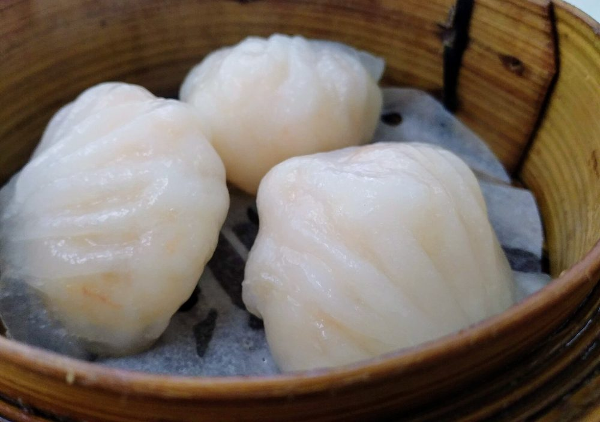
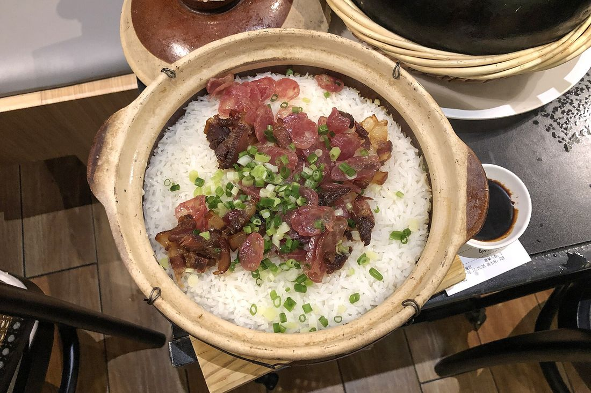
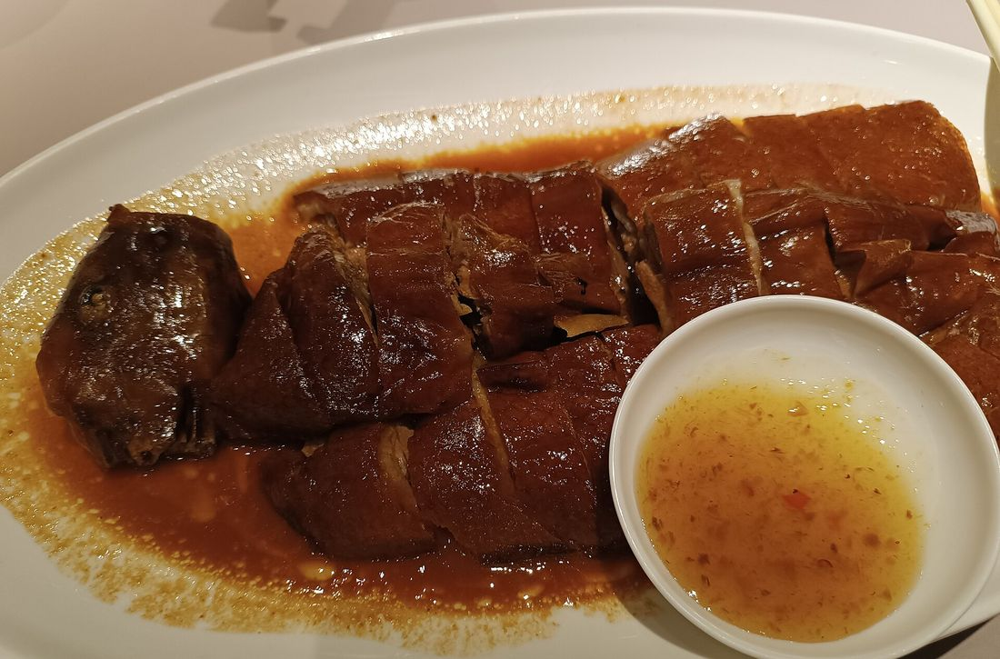
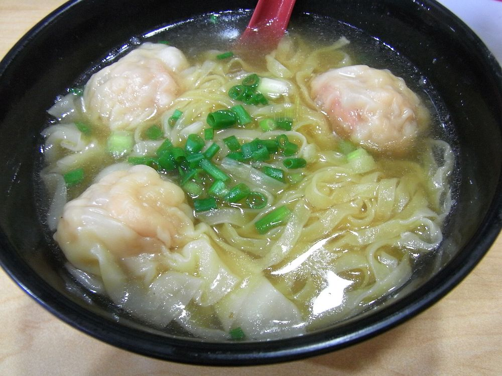

Guangzhou is the one Chinese city where I plan the day around meals rather than sights. The eating is cheap enough to do four times a day, the rituals are old enough to be worth learning before you sit down, and the geography of it is unusually tidy: the historic food neighborhoods sit on Line 1, and the expensive hotel dining sits on Line 3. You can cross from a ¥35 teahouse breakfast to a ¥500 hotel lunch on one metro ride.
This page is the one-day version — the timing, the prices, and the three phrases that carry a meal. The long-form version, with all 19 dishes and the specific restaurant notes, is in our Guangzhou food guide.
These are the ranges I work from for 2026, per person, in the ordinary (non-hotel) tier:
| Meal | What it is | Price |
|---|---|---|
| Breakfast | Yum cha — tea plus three or four baskets | ¥30–60 |
| Lunch | Wonton noodles or claypot rice | ¥25–45 |
| Afternoon | Double-skin milk or a Cantonese 糖水 (sweet soup) | ¥10–25 |
| Dinner | Roast goose with rice and a vegetable | ¥60–100 |
| Day total | Eating well, before drinks | ¥125–230 |
The jump happens at hotel level, not at quality level. Dim sum in a five-star dining room runs ¥200–500 per person, and it is more polished but rarely better than the mid-range chains. The other trap is the strip around Beijing Road, where the same bowl of noodles costs double and tastes half — a five-minute walk off the pedestrian street fixes both problems.

Two systems coexist and neither is more authentic. In an old teahouse, servers push heated carts between tables: flag one down, point at what you want, and they stamp your card. In newer places you tick a paper menu or scan a QR code. Portions run three pieces for dumplings and buns, one for a lotus-leaf rice parcel, so a table of two orders five or six items and shares.
The tea question comes first: 饮咩茶, which tea? The three answers that matter are 普洱 (pu'er, dark and earthy, the default), 铁观音 (tieguanyin, a floral oolong) and 菊花 (chrysanthemum, caffeine-free). Tea is charged per person and refilled free — to ask for a refill, tip the pot lid or tap the pot twice on the table; when someone pours for you, tap two fingers on the table to say thank you. A busy teahouse will push hundreds of baskets through a morning, and the height of the steamer stack by the pass is the simplest read on how good the kitchen is.

| Area | Good for | Metro |
|---|---|---|
| 西关 / 上下九 (Xiguan, Shangxiajiu) | Old Guangzhou, cheapest dim sum, 肠粉 specialists | 长寿路 Changshou Lu (Line 1) |
| 北京路 (Beijing Road) | Central, mixed tourist and local, easy first yum cha | 公园前 Gongyuanqian (Lines 1/2) |
| 淘金 (Taojin) | Roast-meat shops, Cantonese restaurants with English menus | 淘金 Taojin (Line 5) |
| 珠江新城 (Zhujiang New Town) | Modern Cantonese, hotel dim sum, highest prices | 珠江新城 (Lines 3/5) |
| 番禺 (Panyu) | Suburban seafood halls, where locals go for a big family meal | 番禺广场 Panyu Square (Line 3) |
If you only have one morning, take it in Xiguan. Any residential street off Shangxiajiu will have a neighborhood teahouse with carts, no English, and a ¥30–60 bill — the most rewarding hour of eating in the city. If you want an English menu and consistent har gow, the modern chains at ¥80–150 are the safe middle.

Dim sum is a morning institution, not an all-day menu. On a weekday, 8am to 11am is the sweet spot; weekend queues start before 9am, and several of the old teahouses close dim sum service on Monday or Tuesday. Roast-meat shops sell out of goose by about 19:30. The full arc that works: yum cha at nine, walk it off along the Pearl River, claypot rice at seven.
WeChat Pay and Alipay both accept foreign cards and both are accepted by every stall in the city; card terminals are thin outside hotels, and many traditional teahouses are cash-or-QR only. The language is easier than it looks — 唔该 (m goi, please and thank you, said to staff), 埋单 (maai daan, the bill), and 要呢个 (want this one, with a point) cover most of a meal. Menus in teahouses are ticked on paper; in noodle shops the dishes are on the wall.